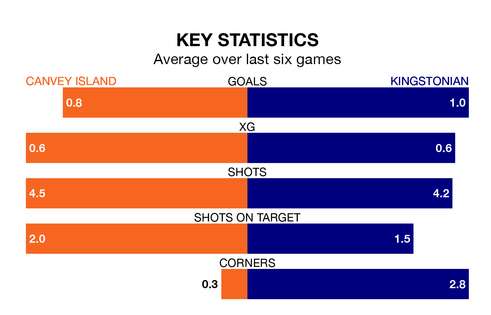

Canvey Island are heavy favourites to keep all three points at home in Saturday's kick-off against Kingstonian.
The Gulls, who sit 14th in Isthmian Premier Division with 22 games played, are priced at 1.6 to seal victory at the Brockwell Stadium.
Sitting seven places and 17 points behind them in the table, Kingstonian are 4.3 to win with *Betting Company*, while the draw is at 4.1.
Canvey Island are in bad form in Isthmian Premier Division, with one win and a draw from their last six games.
But with no wins and a draw over that period, Kingstonian's form is even worse – they have taken one point from 18, compared to the Gulls' four.
In the last 10 years, Canvey Island and Kingstonian have played each other on nine occasions. Canvey Island won three of them, Kingstonian five, and they drew once.
On average, the Gulls scored 1.7 goals and Kingstonian 1.7 in those matches.
Their last meeting was on August 19, when Kingstonian won 2-1 at home.
With 33 goals in 22 games so far this season, the away side are scoring at below the league average rate with 1.5 goals per game. And they are conceding more than average, letting in 51 goals at a rate of 2.3 per game.
The hosts are also below average scorers, with 1.5 goals per game, compared to a league average of 1.6. They have conceded 1.9 goals per game.
Canvey Island's last match was on January 6, a 2-1 loss against Haringey Borough.
Kingstonian lost 3-1 against Billericay Town last time out, also on January 6.
Updated: 13:38 (UTC), 10/01/24